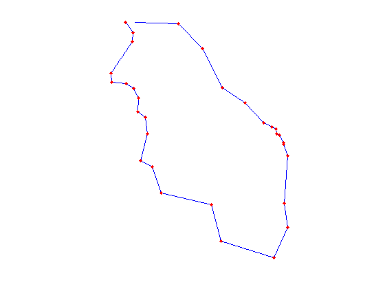
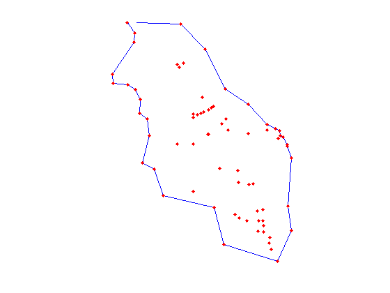
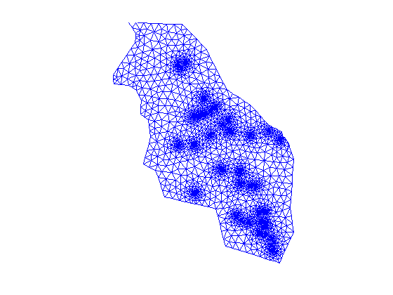
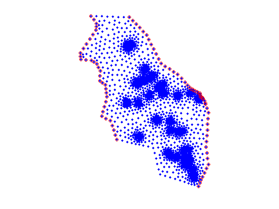
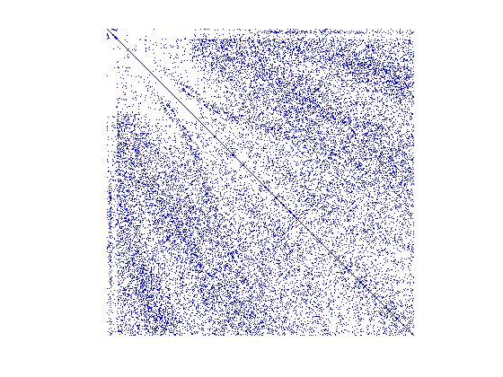
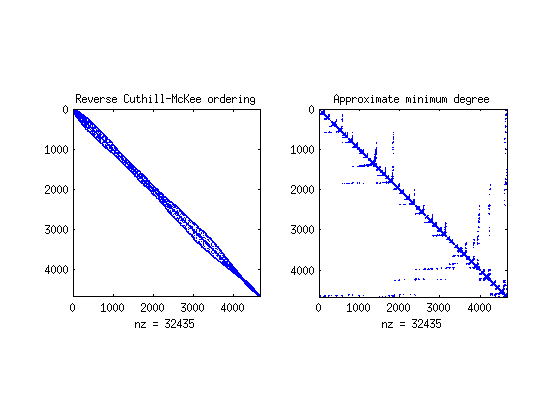
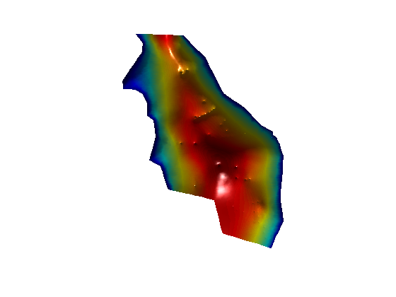

Coastal Aquifer Simulation
| main | Tutorials | Functions | website |
Although mSim was not developed for coastal aquifer simulations we illustrate here that it is possible to use it when we assume that the sharp interface approximation is reasonable. In particular we are using the sharp interface approximation that was developed by Mantoglou et al., (2004). The workflow that is described below was also used by Kourakos and Mantoglou (2015).
Contents
Aquifer description
The coastal aquifer is located at the central part of Santorini island in Greece. The north and south boundaries are considered no flow, while the east and west boundaries are seawater fronts. The hydraulic conductivity and groundwater recharge are spatially variable. The DATA folder of the mSim bitbucket repository provides the related shapefiles.
Mesh generation
The first step in numerical modeling is to generate a mesh for the modeling domain. This example is based on a real case study and the domain is described by shapefiles. Hence we first read the data related to aquifer geometry and then initialize a CSG object:
domain = shaperead(['/DATA/Santorini_outline']); wells = shaperead(['/DATA/Santorini_wells']); santorini = CSGobj_v2(2,1,500,1000,10); % Dim,Npoly,Nline,Npoints,usertol
Then we put the domain outline into the empty object. Note that the domain outline should always be the first object to be read into the CGS object.
santorini = santorini.readshapefile(domain);
We can plot anytime the content of the CSG object using the method:
santorini.plotCSGobj axis equal; axis off
Next we will add the wells into the CGS object. However we need to clean the shapefile because not all the wells lay inside the domain. (There are few wells that are almost near the shoreline). In addition to this we want to add few more fields which instruct Gmsh how to refine the mesh around the wells. Here we specify the minimum element length near the wells equal to 5 m and the maximum element length equal to 500 m at 1 km distance from the wells.
dlt = []; for i = 1:size(wells) in = inpolygon(wells(i,1).X, wells(i,1).Y, domain.X, domain.Y); if in wells(i,1) = wells(i,1); wells(i,1).DistMin = 5; wells(i,1).DistMax = 1000; wells(i,1).LcMin = 5; wells(i,1).LcMax = 500; else dlt = [dlt; i]; end end wells(dlt,:)=[];
Now we can add the wells into the CSG and plot the entities contained within
santorini = santorini.readshapefile(wells); santorini.plotCSGobj axis equal; axis off
Before generating the mesh we need to define few options related to mesh generation
meshopt=msim_mesh_options; meshopt.lc_gen = 300; meshopt.embed_points = 1;
To generate the mesh first we write the geometry and options to a file
santorini.writegeo('santorini',meshopt);
With the gmsh input file ready the last step is to run gsmh to generate the mesh
gmsh_path = '$HOME/Downloads/gmsh-2.12.0-Linux/bin/gmsh'; santorini.runGmsh('santorini', gmsh_path, []); [p MSH]=read_2D_Gmsh('santorini',0 ,0);
Info : Running '/home/giorgk/Downloads/gmsh-2.12.0-Linux/bin/gmsh santorini.geo -2' [Gmsh 2.12.0, 1 node, max. 1 thread] Info : Started on Thu Jun 9 09:18:52 2016 Info : Reading 'santorini.geo'... Info : Done reading 'santorini.geo' Info : Meshing 1D... Info : Meshing curve 1 (Line) Info : Meshing curve 2 (Line) Info : Meshing curve 3 (Line) Info : Meshing curve 4 (Line) Info : Meshing curve 5 (Line) Info : Meshing curve 6 (Line) Info : Meshing curve 7 (Line) Info : Meshing curve 8 (Line) Info : Meshing curve 9 (Line) Info : Meshing curve 10 (Line) Info : Meshing curve 11 (Line) Info : Meshing curve 12 (Line) Info : Meshing curve 13 (Line) Info : Meshing curve 14 (Line) Info : Meshing curve 15 (Line) Info : Meshing curve 16 (Line) Info : Meshing curve 17 (Line) Info : Meshing curve 18 (Line) Info : Meshing curve 19 (Line) Info : Meshing curve 20 (Line) Info : Meshing curve 21 (Line) Info : Meshing curve 22 (Line) Info : Meshing curve 23 (Line) Info : Meshing curve 24 (Line) Info : Meshing curve 25 (Line) Info : Meshing curve 26 (Line) Info : Meshing curve 27 (Line) Info : Meshing curve 28 (Line) Info : Meshing curve 29 (Line) Info : Meshing curve 30 (Line) Info : Meshing curve 31 (Line) Info : Done meshing 1D (0.02 s) Info : Meshing 2D... Info : Meshing surface 1 (Plane, Delaunay) Info : Done meshing 2D (0.37277 s) Info : 4667 vertices 9404 elements Info : Writing 'santorini.msh'... Info : Done writing 'santorini.msh' Info : Stopped on Thu Jun 9 09:18:52 2016 Reading points... Reading Elements...
The mesh consists of 2D triangular elements therefore we can easily visualize it in matlab
clf triplot(MSH(3,1).elem(1,1).id, p(:,1), p(:,2)) axis equal; axis off
Hydraulic conductivity
The hydraulic condictivity is spatially variable and consists of zones of uniform hydraulic conductivity. The shape of the zones and their values are defined by the following shapefile
cond = shaperead(['/DATA/Santorini_Cond']);
Now we have to assign a conductivity value to each mesh point. First we allocate a variable to hold the conductivity
K = nan(size(p,1),1);
Then we loop through the hydraulic conductivity zones and identify which mesh points lay inside each zone.
for i = 1:size(cond,1) in = inpolygon(p(:,1),p(:,2), cond(i,1).X,cond(i,1).Y); K(in,1) = cond(i,1).KX; end
Due to simplification of the boundaries, some points are slightly outside the simplified domain. Therefore we use nearest neibrhood interpolation to assign hydraulic conductivities for points with nan values. In general is a good practice to make sure that there are no nans or negative values assigned to hydraulic conductivity
id_nan = find(isnan(K)); id_no_nan = find(~isnan(K)); IDX = knnsearch(p(id_no_nan,:), p(id_nan,:)); K(id_nan,1) = K(id_no_nan(IDX),1);
Groundwater recharge (fluxes on elements)
Groundwater recharge is also given by a shapefile that consists of several groundwater rechagre zones.
rch = shaperead(['/DATA/Santorini_Rech']);
However here we will assign the groundwater recharge values to the elements as areal sources (not on the mesh points). First we allocate a matrix to hold recharge values
R = zeros(size(MSH(3, 1).elem.id, 1),1);
Next we compute the barycenters of the mesh triangles
cc = Calc_Barycenters(p(:,1:2), MSH(3, 1).elem.id);
Last we loop through the groundwater recharge zones and assign the recharge rates to the elements
for i = 1:size(rch,1) in = inpolygon(cc(:,1), cc(:,2), rch(i,1).X, rch(i,1).Y); R(in,1) = rch(i,1).RECHARGE; end
In the case of groundwater recharge, the elements outside of the boundaries of the rch shapefile get zero recharge as the recharge shapefile covers only the non zero recharge areas.
To assign the diffuse groundwater recharge we define a structure as follows:
FLUX(1,1).id = [1:size(MSH(3, 1).elem.id, 1)]'; % element ids FLUX(1,1).val = R; %element values FLUX(1,1).dim=2; % dimension of the elements FLUX(1,1).el_type='triangle'; % This is the type of element FLUX(1,1).el_order='linear'; % This is the element order FLUX(1,1).id_el=1; % This is the index of the elements in the MSH.elem array
Well rates (Point fluxes)
The actual well rates will be computed via the optimization. However we will set a constant rate equal to -10 m^3/day for demonstration. To do so we have to find the mesh node ids that correspond to the wells.
FLUXwells = zeros(size(p,1),1); for i = 1:size(wells,1) [dst id] = min(sqrt((wells(i,1).X - p(:,1)).^2 + (wells(i,1).Y - p(:,2)).^2)); FLUXwells(id,1) = -10; end
Note that FLUXwells is an array with size equal to the mesh nodes that has zero values everywhere except the mesh nodes associated with a point source.
Boundary conditions
According to the problem description the east and west boundaries are constant head equal to 0 (sea boundary). The north and south are considered impervious boundaries. The east constant head boundary is described by the domain line segments with id 1:15, while the west boundary is described by the line segments with ids 18:31
id_cnst = false(size(p,1),1); for i = 1:14 L = [domain.X(i) domain.Y(i) domain.X(i + 1) domain.Y(i + 1)]; dst = Dist_Point_LineSegment(p(:,1), p(:,2),L); id_cnst(abs(dst - 0)< 0.5) = true; end for i = 18:30 L = [domain.X(i) domain.Y(i) domain.X(i + 1) domain.Y(i + 1)]; dst = Dist_Point_LineSegment(p(:,1), p(:,2),L); id_cnst(abs(dst - 0)< 0.5) = true; end CH = [find(id_cnst) zeros(sum(id_cnst),1)];
There are no general rules on how to identify the ids of the boundaries. Here we loop through the segments of the outline that we know they correspond to constant head boundary and for each segment we calculate the distance between the line and the mesh nodes. The nodes with distance less than a specified threshold are assumed to lay on the boundary.
To verify that we have identified the correct nodes as boundary conditions its good practice to visualize them
plot(p(:,1),p(:,2),'.') hold on plot(p(CH(:,1),1),p(CH(:,1),2),'or') axis equal; axis off
Assemble LHS and RHS matrices
Now we are ready to assemble the system matrices. For the LHS we set the following options and then run:
simopt.dim=2; simopt.el_type='triangle'; simopt.el_order='linear'; [Kglo H]= Assemble_LHS(p, MSH(3,1).elem(1,1).id, K , CH, [], simopt);
Although this is not nessecary we can visualize the sparsity pattern of the conductance matrix.
spy(Kglo)
It appears that the mesh numbering by gmsh does not produce very good clustering around the main diagonal. In matlab we can try to improve this by using the available renumbering algorithm such as
clf renum1 = symrcm(Kglo); subplot(1,2,1);spy(Kglo(renum1,renum1)); title('Reverse Cuthill-McKee ordering') renum2 = symamd(Kglo); subplot(1,2,2);spy(Kglo(renum2,renum2)); title('Approximate minimum degree')
Last we assemble the RHS. First we assemble the element sources, which essentially are distributed to the mesh nodes, and then we add the node sources to the resulting vector.
F_rch= Assemble_RHS(length(H),p, MSH, FLUX); F = F_rch + FLUXwells;
Solve
To solve the system we simply execute:
PHI=solve_system(Kglo(renum1,renum1), H(renum1), F(renum1));
Note that in the solve_system function we use as inputs the renumbering from the Reverse Cuthill-McKee ordering algorithm. The renumbering affects the matrices during the execution of the "solve_system" command and the matrices in the main wordspace remain intact.
However the solution PHI corresponds to the new numbering set by renum1. To revert it back to the original numbering we have to find the current row of each vertex. This is quite simple task as follows:
[lia, locb] = ismember([1:size(p,1)],renum1); PHI = PHI(locb);
Although the msim solves the PDE of groundwater flow equation, in this case the result is not the hydraulic head field, but the potential Φ. To convert it to hydraulic head we use the following formula from Mantoglou et al., (2004).
Head = sign(PHI).*sqrt(2*0.025.*abs(PHI)/(1+0.025));
As we are using 2D triangle elements we can visualize the solution
clf trisurf(MSH(3,1).elem(1,1).id, p(:,1), p(:,2),Head,'edgecolor','none',... 'FaceColor','interp','FaceLighting','phong') camlight right view(0,90);axis off;daspect([2500 2500 1])
References
- Kourakos G., and A. Mantoglou (2015), An efficient Simulation-Optimization Coupling for Management of Coastal Aquifers. Hydrogeology Journal 23(6), 1167 – 1179, doi:10.1007/s10040-015-1293-7.
- Mantoglou A., Papantoniou M. & Giannoulopoulos P., (2004), Management of coastal Aquifers based on nonlinear optimization and evolutionary algorithms’, Journal of Hydrology, pp.209 - 228.